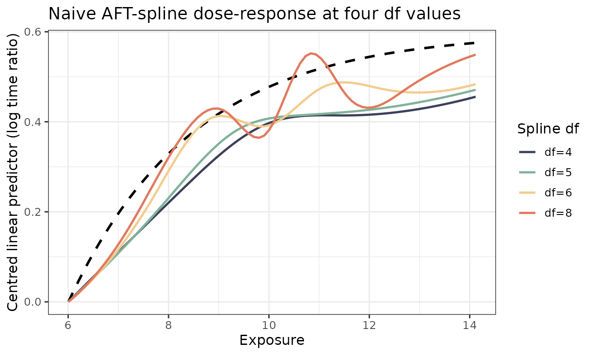
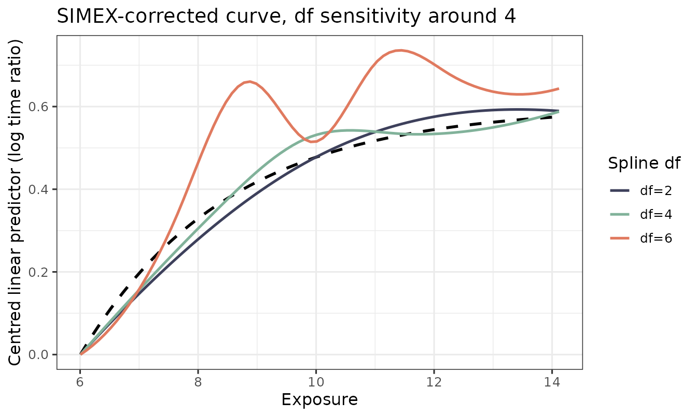

Sensitivity analysis: spline degrees of freedom
Source:vignettes/sensitivity-df.Rmd
sensitivity-df.RmdThe spline degrees of freedom df controls how flexibly
the fitted dose-response curve can bend. It is the single most
consequential tuning knob in this package: too low and the curve will be
biased in regions where the true dose-response changes rapidly; too high
and the curve will overfit noise and inflate variance.
This vignette walks through three concrete recommendations:
-
Inspect the curve shape across a small grid of
dfvalues. -
Use AIC to pick a single
dffor the headline result. -
Report the sensitivity range across neighbouring
dfvalues alongside the headline.
These steps apply equally to a naive AFT-spline fit, an SIMEX-corrected fit, or a two-stage bootstrap.
Set up
We use one simulated replicate to keep the runtime small. On real data substitute your cleaned survival data frame and validation sample.
sim <- generate_aft_data(n = 2000, n_val = 500, seed = 2026)
cal <- fit_me_calibration(sim$validation)
W <- as.matrix(sim$survival[, cal$W_cols])
g <- gls_combine(W, cal)
dat <- sim$survival
dat$W_bar <- g$W_bar
V_REF <- c(V1 = 30, V2 = 30, V3 = 0, V4 = 0)
x_grid <- seq(quantile(dat$W_bar, 0.05),
quantile(dat$W_bar, 0.95), length.out = 80)
truth <- f_true(x_grid) - f_true(x_grid[1])1. Inspect the curve shape across df
We fit a naive AFT-spline (the simplest, fastest estimator) at four
values of df. The naive fit is biased by measurement error
in W_bar, but it isolates the smoothing
contribution of df — which is what we want to understand
here. The same df-sensitivity logic carries over to the SIMEX-corrected
fit because higher df reduces smoothing bias for
every spline-based estimator.
df_grid <- c(4, 5, 6, 8)
fits <- lapply(df_grid, function(d) {
fit_aft_spline(dat, x_var = "W_bar",
covariates = names(V_REF), df = d)
})
names(fits) <- paste0("df=", df_grid)
curves <- lapply(fits, function(f) {
lp <- predict_curve(f, x_grid, v_ref = V_REF, x_var = "W_bar")
lp - lp[1]
})
sp <- stagill_palette()
df_palette <- setNames(
unname(sp[c("TwilightIndigo", "MutedTeal", "ApricotCream", "BurntPeach")]),
paste0("df=", df_grid)
)
plot_curves(x_grid, truth, fits = curves, colors = df_palette,
title = "Naive AFT-spline dose-response at four df values") +
ggplot2::labs(color = "Spline df")
What to look for:
- At
df = 4the curve cannot fully capture the steep low-W_barsegment of the true function. It is the most biased but the smoothest. - At
df = 8the curve hugs the data more closely but begins to show wiggle artefacts. - The middle values (
df = 5, 6) tend to be the practical compromise on this dataset.
2. AIC for an automatic choice
survreg() reports a log-likelihood. We compute AIC
manually and pick the minimiser.
aic_table <- data.frame(
df = df_grid,
k = sapply(fits, function(f) length(coef(f)) + 1L), # +1 for log-scale
logLik = sapply(fits, function(f) as.numeric(logLik(f))),
AIC = sapply(fits, function(f) AIC(f))
)
aic_table
#> df k logLik AIC
#> df=4 4 10 -10819.60 21659.19
#> df=5 5 11 -10819.34 21660.69
#> df=6 6 12 -10818.07 21660.14
#> df=8 8 14 -10816.32 21660.64
df_star <- df_grid[which.min(aic_table$AIC)]
df_star
#> [1] 4df_star is the AIC-minimising spline df — the value we
would use for the headline dose-response figure on real data.
3. Reporting a sensitivity range
A defensible reporting strategy in the manuscript is:
“The headline dose-response is shown at
df = df_star(AIC-minimising acrossdf ∈ {4, 5, 6, 8}). Conclusions are unchanged across this range; see Supplementary Figure X for sensitivity.”
We can plot the SIMEX-corrected curve at, say, df_star,
alongside df_star ± 2, to show that the substantive shape
of the curve is robust. This is more expensive than the naive fits above
because each SIMEX call runs the full perturb-refit-extrapolate
pipeline, but the result is much more informative for a reviewer.
df_show <- sort(unique(pmax(2, c(df_star - 2, df_star, df_star + 2))))
set.seed(2026)
simex_curves <- lapply(df_show, function(d) {
s <- simex_aft_spline(
dat, x_var = "W_bar", sigma_w_sq = g$sigma_w_sq,
covariates = names(V_REF), v_ref = V_REF,
lambda = c(0.5, 1, 1.5, 2), B = 30,
df = d, x_grid = x_grid
)
s$curve_simex
})
names(simex_curves) <- paste0("df=", df_show)
simex_palette <- setNames(
unname(stagill_palette()[c("TwilightIndigo", "MutedTeal", "BurntPeach")]),
names(simex_curves)
)
plot_curves(x_grid, truth, fits = simex_curves, colors = simex_palette,
title = paste0("SIMEX-corrected curve, df sensitivity around ",
df_star)) +
ggplot2::labs(color = "Spline df")
If these three curves agree on the qualitative dose-response shape —
where it rises, where it plateaus, where it is monotone — the
substantive claim is robust to df. If they disagree (e.g.,
a peak appears at df = df_star + 2 but not at
df_star), that disagreement should be reported and the
manuscript framing softened accordingly.
Practical recommendations
-
Start with
df ∈ {4, 5, 6, 8}. This range is wide enough to reveal smoothing bias but narrow enough to keep the substantive shape comparable. - Headline at AIC-min. AIC is not perfect, but it is reproducible and pre-specifiable.
- Always report a sensitivity range in the appendix.
-
Avoid
df = 3unless the dose-response is genuinely close to linear; the basis is too rigid to capture realistic biological curvature. -
Avoid
df > 10without penalisation;survreg()has no spline penalty, so high-df unpenalised fits will wiggle. If you need that flexibility, switch to a penalised spline viamgcv::gam(). (Future versions ofaftsplexmay add an mgcv backend.)
Related vignettes
-
vignette("quickstart")— the full Phase 1 + Phase 2 + bootstrap pipeline at a single fixeddf = 4. -
vignette("simulation-study")— Monte Carlo bias and ISE of the three estimators at the defaultdf = 4.